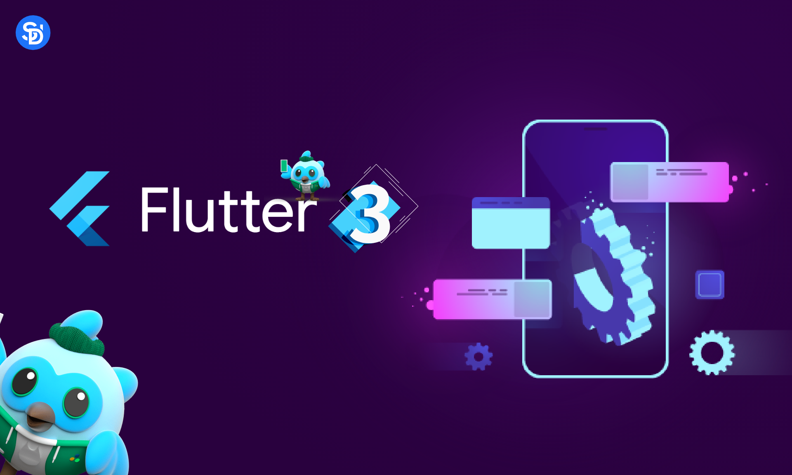

.png)

Flutter is a free and open-source mobile UI framework created by Google and released in May 2017. In a few words, it allows you to create a native mobile application with only one codebase. This means that you can use one programming language and one codebase to create two different apps (for iOS and Android). Flutter consists of two important parts: An SDK (Software Development Kit): A collection of tools that are going to help you develop your applications. This includes tools to compile your code into native machine code (code for iOS and Android). A Framework (UI Library based on widgets): A collection of reusable UI elements (buttons, text inputs, sliders, and so on) that you can personalize for your own needs.
Why you should learn Flutter? I selected some of the reasons why I like Flutter and why I want to use it next year. I will give you details and my feedback below. Simple to learn and use Flutter is a modern framework, and you can feel it! It’s way simpler to create mobile applications with it. If you have used Java, Swift, or React Native, you'll notice how Flutter is different. I personally never liked mobile application development before I started using Flutter. What I love about Flutter is that you can create a real native application without a bunch of code.
maximum productivity Thanks to Flutter, you can change your code and see the results in real-time. It’s called Hot-Reload. It only takes a short amount of time after you save to update the application itself. Significant modifications force you to reload the app. But if you do work like design, for example, and change the size of an element, it’s in real-time!
If you want to show your product to investors as soon as possible, Flutter is a good choice. Here are my top 4 reasons to use it for your MVP: It’s cheaper to develop a mobile application with Flutter because you don’t need to create and maintain two mobile apps (one for iOS and one for Android). One developer is all you need to create your MVP. It’s performant – you won't notice the difference between a native application and a Flutter app. It’s beautiful – you can easily use widgets provided by Flutter and personalize it to create a valuable UI for your customers (you can find examples of applications made with Flutter below).
It’s important for new technology to have good documentation. But it’s not always the case that it has it! You can learn a lot from Flutter's documentation, and everything is very detailed with easy examples for basic use cases. Each time I’ve had a problem with one of my widgets in my code, I have been able to check the documentation and the answer was there.
Flutter has a robust community, and it’s only the beginning! As you may know, I love to share my knowledge and useful content on programming on my website. I need to know I’m working on a technology full of potential with a lot of backers. When I started using Flutter, the first thing I did was search for communities, and to my surprise… there are a considerable number of places to exchange info on Flutter.

Comments